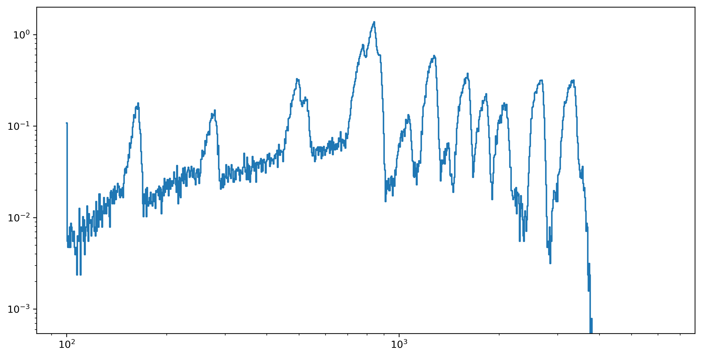

You can interact with this notebook online: Launch notebook
[1]:
# General imports
import numpy as np
import pandas as pd
from pathlib import Path
import matplotlib.pyplot as plt
import astropy.constants as const
import astropy.units as u
%config InlineBackend.figure_format ='retina'
[2]:
# TARDIS imports for the gamma-ray code
from tardis.io.atom_data import AtomData
from tardis.model import SimulationState
from tardis.plasma.base import BasePlasma
from tardis.io.configuration import config_reader
from tardis.energy_input.main_gamma_ray_loop import run_gamma_ray_loop
from tardis.plasma.properties import Density, Abundance, IsotopeAbundance, \
IsotopeNumberDensity, AtomicData, AtomicMass, IsotopeMass, NumberDensity, \
SelectedAtoms
/Users/anirbandutta/Software/tardis/tardis/__init__.py:20: UserWarning: Astropy is already imported externally. Astropy should be imported after TARDIS.
warnings.warn(
[3]:
# Download the atom data file from tardis-regression-data repo to run this cell.
atom_data_file = 'kurucz_cd23_chianti_H_He.h5'
atom_data = AtomData.from_hdf(atom_data_file)
INFO:tardis.io.atom_data.util:
Atom Data kurucz_cd23_chianti_H_He.h5 not found in local path.
Exists in TARDIS Data repo /Users/anirbandutta/Downloads/tardis-data/kurucz_cd23_chianti_H_He.h5
INFO:tardis.io.atom_data.base:Reading Atom Data with: UUID = 6f7b09e887a311e7a06b246e96350010 MD5 = 864f1753714343c41f99cb065710cace
INFO:tardis.io.atom_data.base:Non provided Atomic Data: synpp_refs, photoionization_data, yg_data, two_photon_data, linelist
[4]:
# Read the config file and create a configuration object
config_file = Path("../../io/configuration/tests/data/tardis_configv1_density_exponential_nebular_Ni_only.yml")
config = config_reader.Configuration.from_yaml(config_file)
[5]:
# Create the model
model = SimulationState.from_config(config, atom_data)
WARNING:tardis.model.parse_input:Number of density points larger than number of shells. Assuming inner point irrelevant
WARNING:tardis.model.parse_input:Abundances have not been normalized to 1. - normalizing
INFO:tardis.model.matter.decay:Decaying abundances for 12960000.0 seconds
/Users/anirbandutta/Software/tardis/tardis/model/matter/composition.py:101: FutureWarning: Setting an item of incompatible dtype is deprecated and will raise in a future error of pandas. Value '9.288214564694115e-23' has dtype incompatible with int64, please explicitly cast to a compatible dtype first.
isotope_mass_df[isotope_tuple] = isotope_mass
[6]:
# This shows the isotope abundances in the model before decay
model.composition.raw_isotope_abundance
[6]:
| 0 | 1 | 2 | 3 | 4 | 5 | 6 | 7 | 8 | 9 | 10 | 11 | 12 | 13 | 14 | 15 | 16 | 17 | 18 | 19 | ||
|---|---|---|---|---|---|---|---|---|---|---|---|---|---|---|---|---|---|---|---|---|---|
| atomic_number | mass_number | ||||||||||||||||||||
| 28 | 56 | 0.479167 | 0.479167 | 0.479167 | 0.479167 | 0.479167 | 0.479167 | 0.479167 | 0.479167 | 0.479167 | 0.479167 | 0.479167 | 0.479167 | 0.479167 | 0.479167 | 0.479167 | 0.479167 | 0.479167 | 0.479167 | 0.479167 | 0.479167 |
[7]:
# Construct the Plasma
input = [Density, Abundance, IsotopeAbundance, AtomicData, AtomicMass, IsotopeNumberDensity, NumberDensity, SelectedAtoms, IsotopeMass]
plasma = BasePlasma(plasma_properties=input, density = model.density,
abundance=model.abundance, isotope_abundance=model.composition.raw_isotope_abundance,
atomic_data = atom_data)
[8]:
# Define the number of MC packets
num_packets = 2000000
np.random.seed(1)
[9]:
# Execute this cell to run the simulation
energy_df, energy_plot_df, escape_energy, decayed_packet_count, energy_plot_positrons, \
energy_estimated_deposition = run_gamma_ray_loop(model, plasma, num_decays=num_packets,
time_start=0.0011574074, time_end=20.0, time_space="log",
time_steps=50, seed=1, positronium_fraction=0.0,
spectrum_bins=1000, grey_opacity=-1,
atom_data=atom_data)
INFO:tardis.energy_input.main_gamma_ray_loop:Total gamma-ray energy is 6.51100757656281e+45
INFO:tardis.energy_input.main_gamma_ray_loop:Total number of packets is 1999983
INFO:tardis.energy_input.main_gamma_ray_loop:Energy per packet is 3.255531460298818e+39
INFO:tardis.energy_input.main_gamma_ray_loop:Initializing packets
/Users/anirbandutta/Software/tardis/tardis/energy_input/util.py:72: NumbaPerformanceWarning: np.dot() is faster on contiguous arrays, called on (Array(float64, 1, 'A', False, aligned=True), Array(float64, 1, 'C', False, aligned=True))
return 1 - (np.dot(direction_vector, velocity_vector) / C_CGS)
INFO:tardis.energy_input.main_gamma_ray_loop:Creating packet list
INFO:tardis.energy_input.main_gamma_ray_loop:Total cmf energy is 6.510584035699688e+45
INFO:tardis.energy_input.main_gamma_ray_loop:Total rf energy is 6.515740996756502e+45
/Users/anirbandutta/Software/tardis/tardis/energy_input/gamma_packet_loop.py:201: NumbaPerformanceWarning: np.dot() is faster on contiguous arrays, called on (Array(float64, 1, 'C', False, aligned=True), Array(float64, 1, 'A', False, aligned=True))
) = distance_trace(
/Users/anirbandutta/mambaforge/envs/tardis/lib/python3.11/site-packages/numba/core/ir_utils.py:2149: NumbaPendingDeprecationWarning:
Encountered the use of a type that is scheduled for deprecation: type 'reflected list' found for argument 'packets' of function 'gamma_packet_loop'.
For more information visit https://numba.readthedocs.io/en/stable/reference/deprecation.html#deprecation-of-reflection-for-list-and-set-types
File "../gamma_packet_loop.py", line 35:
@njit(**njit_dict_no_parallel)
def gamma_packet_loop(
^
warnings.warn(NumbaPendingDeprecationWarning(msg, loc=loc))
Entering gamma ray loop for 1999983 packets
Escaped packets: 531945
Scattered packets: 154689
[10]:
plt.figure(figsize=(12, 6), dpi=150)
plt.step(escape_energy.index, escape_energy.iloc[:,49], label="$\gamma$-spectrum", where="post")
plt.loglog()
[10]:
[]

[ ]: